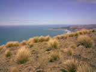
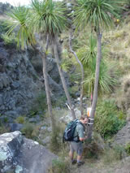

Confirmed Teams by Category
(Updated 18 November 2010)
Men Open
| Reg ID | Names (Gender) | Category | Country |
|---|---|---|---|
| 1 | Jordan Lefmann (M) Martin Lefmann (M) | MO | Australia Australia |
| 5 | Aaron Scott (M) David Sutherland (M) | MO | New Zealand New Zealand |
| 10 | Nathan Harris (M) Ev Tolerton (M) Mo Krishnan (M) | MO | New Zealand New Zealand New Zealand |
| 22 | Oleg Kalinin (M) Mikhail Mokeykin (M) | MO | Russia Russia |
| 23 | Brian Pfister (M) Kyle Peter (M) | MO | USA USA |
| 29 | Kelby Rogers (M) Lance Farrar (M) Robert Hooper (M) | MO | New Zealand New Zealand New Zealand |
| 33 | Roland Cziferszky (M) Andreas Cziferszky (M) | MO | Austria Austria |
| 36 | Tõnu Lillelaid (M) Karli Lambot (M) Rait Pallo (M) | MO | Estonia Estonia Estonia |
| 37 | Arvo Ambel (M) Reigo Lehtla (M) | MO | Estonia Estonia |
| 52 | Ralph Lattimore (M) Eddie Rimmer (M) | MO | New Zealand New Zealand |
| 62 | Greig Hamilton (M) Phil Novis (M) | MO | New Zealand New Zealand |
| 69 | Kent Fergusson (M) Matthew Surman (M) | MO | New Zealand New Zealand |
| 70 | Ben Clark (M) Richard Davies (M) Ben Clendon (M) | MO | New Zealand New Zealand New Zealand |
| 74 | Paul Jensen (M) James Brigham-Watson (M) | MO | New Zealand New Zealand |
| 81 | Urmo Liblik (M) Riho Roopold (M) | MO | Estonia Estonia |
| 96 | Alan Moore (M) Sam Trowsdale (M) | MO | New Zealand New Zealand |
| 97 | Ramash Swarmy (M) Caspar Harmer (M) | MO | New Zealand New Zealand |
| 104 | Mal Roberts (M) Ray Jenkins (M) | MO | Australia Australia |
| 113 | Steve Hanmer (M) Bruce Webster (M) | MO | Great Britain Australia |
| 117 | Timothy Farrant (M) Tane Cambridge (M) | MO | New Zealand New Zealand |
| 122 | Alex Minakov (M) Alexander Minakov (M) | MO | Russia Russia |
| 147 | Hamish Fleming (M) Carl Garrett (M) Cameron Holden (M) | MO | New Zealand New Zealand New Zealand |
| 154 | Pavel Demeshchik (M) Vyacheslav Savchenko (M) | MO | Russia Russia |
| 163 | Nikolay Nachev (M) Vladimir Gusiatnikov (M) | MO | USA USA |
| 170 | Paul Guard (M) Tony Scott (M) | MO | Australia Australia |
| 185 | Jourdan Harvey (M) Toby Scott (M) | MO | New Zealand New Zealand |
| 194 | Kalle Pokkinen (M) Richard Simes (M) Patrick Te Tau (M) | MO | Finland New Zealand New Zealand |
| 199 | Nicholas Mulder (M) Ryno Griesel (M) | MO | South Africa South Africa |
| 207 | Jacob de Lacey (M) Rhys John (M) | MO | New Zealand New Zealand |
| 211 | Yagishita Dai (M) Yamada Takashi (M) | MO | Japan Japan |
| 214 | Jyrki Pietilä (M) Ville Pokkinen (M) | MO | Finland Finland |
| 215 | Evgeny Dombrovskiy (M) Dmitry Erokhin (M) | MO | Russia Russia |
| 233 | Phil Kendon (M) Bill Thomson (M) | MO | New Zealand New Zealand |
| 240 | Michael Croxford (M) Ed Steenbergen (M) | MO | New Zealand Australia |
| 242 | Richard Mountstephens (M) Dennis de Monchy (M) | MO | Australia New Zealand |
| 246 | Nick Harris (M) Robb Simpson (M) | MO | New Zealand Australia |
| 248 | Alex Opie (M) Jeremy Lane (M) | MO | New Zealand New Zealand |
| 261 | John Harris (M) Tony Bateup (M) | MO | New Zealand New Zealand |
| 263 | Philip Whitten (M) Joel Mackay (M) | MO | Australia Australia |
| 284 | Denis Kuprienko (M) Yury Borodulin (M) | MO | Russia Russia |
| 287 | Valeriy Syropyatov (M) Anatoly Veshchikov (M) | MO | Russia Russia |
| 302 | Robert Jarvis (M) Matt Bixley (M) | MO | New Zealand New Zealand |
| 311 | Romanov Vladimir (M) Belyakov Anton (M) | MO | Russia Russia |
| 318 | Jun Okabe (M) Shigeyuki Koizumi (M) | MO | Japan Japan |
| 326 | Daniel Johnston (M) Jim Cotter (M) | MO | New Zealand New Zealand |
| 338 | TBA (M) Jamie Stewart (M) | MO | New Zealand New Zealand |
| 340 | Phil Wood (M) Bruce McLeod (M) | MO | New Zealand New Zealand |
| 347 | Paul Monks (M) Alaster Meehan (M) | MO | Australia Australia |
| 366 | Keith Conley (M) Karl Strode-Penny (M) | MO | Australia New Zealand |
| 384 | Ivan Khrabrykh (M) Alexander Eduardov (M) | MO | Russia Russia |
| 387 | Mark Hooker (M) Alistair Wall (M) Kylie Hills (M) | MO | New Zealand New Zealand New Zealand |
| 396 | Mark Flintoft (M) Lee Burbery (M) | MO | New Zealand New Zealand |
| 413 | Conal Boland-bristow (M) Jonathan Werkmeister (M) | MO | New Zealand New Zealand |
| 424 | Tim Sikma (M) Glenn Meyer (M) | MO | New Zealand Australia |
| 456 | Mark Preece (M) Kyle Christensen (M) | MO | New Zealand New Zealand |
| 459 | Jonathan Sutcliffe (M) Andrew Baker (M) | MO | Australia Australia |
| 464 | William Bouvier (M) Frédéric Parzych (M) | MO | France France |
| 493 | Nick Ross (M) Angus Jennings (M) | MO | New Zealand New Zealand |
| 494 | Ricky Thackray (M) Paul Williams (M) | MO | Australia Australia |
| 498 | Jose Nilton Vargas (M) Elcio Pereira De Oliveira (M) | MO | Brazil Brazil |
| 501 | Damon Goerke (M) Rob Preston (M) | MO | Australia Australia |
| 524 | Miroslav Seidl (M) Petr Boranek (M) | MO | Czech Republic Czech Republic |
| 526 | Jan Tojnar (M) Jan Bradler (M) | MO | Czech Republic Czech Republic |
| 532 | Sergey Yashchenko (M) Evgeny Gavrilov (M) | MO | Russia Russia |
| 542 | Alan Mansfield (M) Marcin Kozik (M) | MO | Australia Australia |
| 552 | Chris Forne (M) Marcel Hagener (M) | MO | New Zealand New Zealand |
| 554 | Guntis Pikurs (M) Gints Ermanis (M) | MO | Latvia Latvia |
| 700 | Toby Nielsen (M) Michael Tolmay (M) | MO | New Zealand New Zealand |
Number of Teams: 68 | |||
Women Open
| Reg ID | Names (Gender) | Category | Country |
|---|---|---|---|
| 35 | Ryo Fujiwara (F) Akiko Kanazawa (F) Miwa Matsuo (F) | WO | Japan Japan Japan |
| 47 | Leigh Pettigrew (F) Pippa Pettigrew (F) | WO | New Zealand New Zealand |
| 55 | Robyn McLennan (F) Naomi Shipperlee (F) | WO | Australia Australia |
| 92 | Maria Yashchenko (F) Yulia Kulakova (F) | WO | Russia Russia |
| 111 | Irene Minchin (F) Robyn Dunmore (F) | WO | New Zealand New Zealand |
| 126 | Fleur Lattimore (F) Georgia Whitla (F) | WO | New Zealand New Zealand |
| 209 | Jenny Casanova (F) Zara Soden (F) | WO | Australia Australia |
| 257 | Mary Jowett (F) Anna Bastin (F) | WO | New Zealand New Zealand |
| 275 | Harriette Carr (F) Miriam Jones (F) | WO | New Zealand New Zealand |
| 317 | Clare McLennan (F) Kerry Mulligan (F) | WO | New Zealand New Zealand |
| 335 | Mary McBride (F) Jacquie O’Hagan (F) | WO | Ireland Ireland |
| 367 | Gill Fowler (F) Alexa McAuley (F) | WO | Australia Australia |
| 389 | Sylvia Maclaren (F) Amber Sinton (F) | WO | New Zealand New Zealand |
| 394 | Berit Jensen (F) Veronica Bartlett (F) | WO | Denmark Sweden |
| 437 | Velga Zalaiskalna (F) Baiba Smila (F) | WO | Latvia Latvia |
| 440 | Michelle Greenwood (F) Maiike Jongerius (F) | WO | New Zealand New Zealand |
| 508 | Kathryn Ewels (F) Kirsten Fairfax (F) | WO | Australia Australia |
| 546 | Belinda Bright (F) Debbie Hotchkis (F) | WO | Australia Australia |
Number of Teams: 18 | |||
Mixed Open
| Reg ID | Names (Gender) | Category | Country |
|---|---|---|---|
| 7 | Jun Okabe (M) Etsuko Tanaka (F) | XO | Japan Japan |
| 13 | Rika Tajima (F) Shin Murakoshi (M) | XO | Japan Japan |
| 14 | Mart Pais (M) Merle Rohtla (F) | XO | Estonia Estonia |
| 39 | Mikhael Nikonov (M) Svetlana Subbotina (F) | XO | Russia Russia |
| 40 | Kath Copland (F) Kevin Humphrey (M) | XO | Australia Australia |
| 45 | Vicki Conradson (F) Rory Jones (M) Brian Adams (M) | XO | New Zealand New Zealand New Zealand |
| 57 | Tomi Mäkelä (M) Merja Ylihärsilä (F) | XO | Finland Finland |
| 95 | Ilya Slepov (M) Ekaterina Oleynikova (F) | XO | Russia Russia |
| 120 | Andrew Johnstone (M) Katie Bolt (F) | XO | New Zealand New Zealand |
| 125 | Monica Gerth (F) Wayne Patrick (M) | XO | New Zealand New Zealand |
| 131 | Bryn Davies (M) Piret Klade (F) | XO | New Zealand Estonia |
| 136 | Sergey Grushin (M) Anastasia Galitarova (F) | XO | Russia Russia |
| 165 | Kylie Gaffel (F) Ronald Avenell (M) | XO | Australia Australia |
| 173 | Tim Collinson (M) Charlotte Ireland (F) | XO | New Zealand New Zealand |
| 178 | Aidan Boswell (M) Erin Roberts (F) | XO | New Zealand New Zealand |
| 187 | Ross Bidmead (M) Hazel Bidmead (F) | XO | New Zealand New Zealand |
| 212 | Nao Ito (F) Toshihito Shibata (M) | XO | Japan Japan |
| 230 | Liam Drew (M) Rachel Ockelford (F) | XO | New Zealand New Zealand |
| 288 | Barbara Bryant (F) Eric Bone (M) | XO | USA USA |
| 305 | Shane Lewis (M) Ann Smithson (F) | XO | Australia Australia |
| 334 | David Baldwin (M) Julie Quinn (F) | XO | Australia Australia |
| 336 | Mark Chapple (M) Jo Forbes (F) | XO | New Zealand New Zealand |
| 349 | Martin Dearnley (M) Louise Dearnley (F) | XO | Australia Australia |
| 360 | Mark Wallace (M) Fleur Pawsey (F) | XO | New Zealand New Zealand |
| 400 | Laura Young (F) Ren Bishop (M) | XO | New Zealand New Zealand |
| 403 | Ann-Marie Mulligan (F) Alex Head (M) | XO | New Zealand New Zealand |
| 435 | Raphaelle Cardyn (F) Shane Greene (M) | XO | Canada Canada |
| 475 | Brett Wilson (M) Jana Kaeppler (F) | XO | Australia New Zealand |
| 505 | Andrey Shvedov (M) Natalya Abramova (F) | XO | Russia Russia |
| 525 | Nora Audrá (F) Ian Edmond (M) | XO | Brazil New Zealand |
| 576 | Oleksandr Letychevskyi (M) Georgie Allison (F) | XO | Ukraine New Zealand |
| 583 | Andrew McCarthy (M) Moire O'Sullivan (F) | XO | Ireland Ireland |
| 595 | JP Ingebrigtsen (M) Jen Lavely (F) | XO | Norway USA |
Number of Teams: 33 | |||
Men Junior
| Reg ID | Names (Gender) | Category | Country |
|---|---|---|---|
| 372 | Rowan Nugteren (M) Carl Janssen (M) | MJ | New Zealand New Zealand |
| 390 | Gene Beveridge (M) Matt Ogden (M) | MJ | New Zealand New Zealand |
| 492 | Petr Mikheev (M) Artem Mikheev (M) | MJ | Russia Russia |
Number of Teams: 3 | |||
Women Junior
| Reg ID | Names (Gender) | Category | Country |
|---|---|---|---|
| 325 | Lara Dixon (F) Karly Ryder (F) | WJ | New Zealand New Zealand |
| 530 | Georgie Opie (F) Stacey McCoy (F) | WJ | New Zealand New Zealand |
Number of Teams: 2 | |||
Mixed Junior
| Reg ID | Names (Gender) | Category | Country |
|---|---|---|---|
| 353 | Joel Smith (M) Elisha Nuttall (M) Jessamy Armstrong (F) | XJ | New Zealand New Zealand New Zealand |
| 610 | Vasyl Bodnaruk (M) Vitalii Kindrachuk (M) Mariia Shuper (F) | XJ | Ukraine Ukraine Ukraine |
Number of Teams: 2 | |||
Men Vets
| Reg ID | Names (Gender) | Category | Country |
|---|---|---|---|
| 2 | Shigenobu Nakano (M) Taku Arakawa (M) | MV | Japan Japan |
| 19 | Simon Rea (M) Jeff Williams (M) | MV | New Zealand New Zealand |
| 30 | Mondo Kopua (M) Sam Dillon (M) | MV | New Zealand New Zealand |
| 32 | Melvyn Cox (M) Bruce MacKenzie (M) | MV | Australia New Zealand |
| 46 | Grant Jeffrey (M) Simon Williamson (M) | MV | Australia New Zealand |
| 54 | Stu Geddes (M) John McKinnel (M) | MV | New Zealand New Zealand |
| 59 | Douglas Woods (M) Colin Dixon (M) | MV | New Zealand New Zealand |
| 85 | Jon Smith (M) Mike Broadbent (M) | MV | Australia Australia |
| 102 | Andrew Bell (M) Timothy Donaldson (M) | MV | New Zealand New Zealand |
| 106 | Sulev Kuiv (M) Andres Palk (M) | MV | Estonia Estonia |
| 115 | Benjamin van Wyk (M) Sakkie van Wyk (M) | MV | South Africa South Africa |
| 130 | Vadim Masalkov (M) Gregory Balter (M) | MV | USA USA |
| 142 | Andrew McComb (M) James Nicholson (M) | MV | Australia Australia |
| 144 | Mike Sheridan (M) Chris Tait (M) | MV | New Zealand New Zealand |
| 146 | Andrew McGowan (M) Trevor Merrifield (M) | MV | New Zealand New Zealand |
| 151 | Kevin Osborne (M) Alister Metherell (M) | MV | New Zealand New Zealand |
| 179 | Chris Howell (M) Rolf Boswell (M) | MV | New Zealand New Zealand |
| 217 | Clive Marsh (M) David Sutton (M) | MV | New Zealand New Zealand |
| 219 | Jeff Hall (M) Steve Bruerton (M) | MV | New Zealand New Zealand |
| 223 | Peter Enander (M) Torbjörn Thufvesson (M) | MV | Sweden Sweden |
| 224 | Hamish Goodwin (M) Pete Swanson (M) | MV | New Zealand New Zealand |
| 244 | Michael Wilke (M) Ron Birks (M) | MV | USA USA |
| 247 | Steven Cooper (M) David Nicolson (M) | MV | Australia Australia |
| 278 | Guy de Lacey (M) Stephen John (M) | MV | New Zealand New Zealand |
| 293 | Mark Hearfield (M) Andy Foster (M) | MV | New Zealand New Zealand |
| 307 | Desmond O'Regan (M) Hugo Young (M) | MV | New Zealand New Zealand |
| 308 | Andre Morkel (M) Mark Imbert (M) | MV | Australia Australia |
| 346 | Richard Perry (M) Greg Andrews (M) | MV | Australia Australia |
| 371 | Peter Hamill (M) Mike Aviss (M) | MV | New Zealand New Zealand |
| 383 | Simon Moseley (M) Don Paterson (M) | MV | New Zealand New Zealand |
| 418 | Jerome Sheppard (M) Rob Harrow (M) | MV | New Zealand New Zealand |
| 452 | Aleksander Pritsik (M) Jaak Väärsi (M) | MV | Estonia Estonia |
| 466 | Girts Ziliskis (M) Vesturs Tamuzs (M) | MV | Latvia Latvia |
| 470 | Gordon Balfour (M) Luke Paardekooper (M) Ross Barnes (M) | MV | New Zealand New Zealand New Zealand |
| 478 | Kelvin Lloyd (M) Rodney Baker (M) | MV | New Zealand New Zealand |
| 479 | Valeriy Doverov (M) Dmitry Lavrov (M) | MV | USA USA |
| 489 | Rod Spinks (M) Neil Parker (M) | MV | Australia Australia |
| 560 | Mike Hotchkis (M) Jonathan Worswick (M) | MV | Australia Australia |
| 569 | Alistair Cory-Wright (M) John Fitch (M) | MV | New Zealand Great Britain |
Number of Teams: 39 | |||
Women Vets
| Reg ID | Names (Gender) | Category | Country |
|---|---|---|---|
| 11 | Chris Dixon (F) Caroline Elliott (F) Ros Hadler (F) | WV | New Zealand New Zealand New Zealand |
| 90 | Kerry Gigante (F) Helen Robinson (F) | WV | Australia Australia |
| 129 | Rosita Sanders (F) Deirdre Leslie (F) Penelope McDonald (F) | WV | Australia Australia Australia |
| 167 | Joy Talbot (F) Josie Boland (F) | WV | New Zealand New Zealand |
| 258 | Lesa Muir (F) Judy Wenban (F) | WV | Australia Australia |
| 294 | Deb Bain (F) Sally Dickson (F) | WV | New Zealand New Zealand |
| 377 | Christine Brown (F) Karen Pedley (F) | WV | Australia Australia |
| 420 | Julie Gordon (F) Jo Holden (F) | WV | New Zealand New Zealand |
| 455 | Janet Wilson (F) Yvette Cottam (F) | WV | New Zealand New Zealand |
| 460 | Louise Carver (F) Rebeka Pople (F) | WV | Australia Australia |
| 467 | Tamsin Barnes (F) Wendy Read (F) | WV | Australia Australia |
| 490 | Nina Mikheeva (F) Marina Galkina (F) | WV | Russia Russia |
| 528 | Jitka Klinkerova (F) Monika Oncirkova (F) | WV | Czech Republic Czech Republic |
Number of Teams: 13 | |||
Mixed Vets
| Reg ID | Names (Gender) | Category | Country |
|---|---|---|---|
| 18 | Phil White (M) Anne Mortimer (F) | XV | New Zealand New Zealand |
| 50 | Bill Edwards (M) Yvette Baker (F) | XV | New Zealand Great Britain |
| 56 | Martina Honey (F) Stephen Honey (M) | XV | Australia Australia |
| 80 | Richard Robinson (M) Vivienne Prince (F) | XV | Australia New Zealand |
| 109 | Doug Walsh (M) Debbie Walsh (F) | XV | New Zealand New Zealand |
| 118 | Lauri Leppik (M) Lea Leppik (F) | XV | Estonia Estonia |
| 166 | Bengt Nilsson (M) Yvonne Nilsson (F) | XV | Sweden Sweden |
| 174 | Simon Gerber (M) Kelly Gerber (F) | XV | Australia Australia |
| 175 | Wayne Millow (M) Liz Millow (F) | XV | New Zealand New Zealand |
| 189 | Andrew Cooksley (M) Jane Cooksley (F) | XV | Australia Australia |
| 198 | Geoff Mead (M) Lisa Mead (F) | XV | New Zealand New Zealand |
| 236 | Debbie Mansfield (F) Glen Warner (M) | XV | New Zealand New Zealand |
| 238 | Tony Gazley (M) Jenny Cossey (F) | XV | New Zealand New Zealand |
| 280 | Evelyn Colwell (F) Craig Colwell (M) | XV | Australia Australia |
| 283 | Kai Törmikoski (M) Tarja Kärjä (F) | XV | Finland Finland |
| 289 | Andy Reynolds (M) Alison Reynolds (F) | XV | Great Britain Great Britain |
| 315 | Marian Kazik (M) Zlatica Masarykova (F) | XV | Slovakia Slovakia |
| 328 | Stuart Payne (M) Carol Fowler (F) | XV | New Zealand New Zealand |
| 330 | Dave Forbes (M) Catrina Forbes (F) | XV | New Zealand New Zealand |
| 341 | Sandra Flamank (F) Terry Connolly (M) | XV | New Zealand New Zealand |
| 343 | Al Cross (M) Jill Westenra (F) | XV | New Zealand New Zealand |
| 364 | Dave Rudge (M) Jenny Cassie (F) | XV | New Zealand New Zealand |
| 393 | Brett Sparkes (M) Kerryn Rim (F) | XV | Australia Australia |
| 406 | Peter Montgomery (M) Jane Montgomery (F) | XV | New Zealand New Zealand |
| 415 | Anita Liepina (F) Valters Kaminskis (M) | XV | Latvia Latvia |
| 421 | Denise Black (F) Wit Cieslik (M) | XV | Great Britain Australia |
| 422 | Peteris Ivans (M) Alida Abola (F) | XV | Latvia Latvia |
| 446 | Jean Cory-Wright (F) Ian Harrison (M) | XV | New Zealand New Zealand |
| 449 | Peteris Zarins (M) Baiba Ozola (F) | XV | Latvia Latvia |
| 457 | Seppo Mäkinen (M) Ulla Silventoinen (F) | XV | Finland Finland |
| 506 | Catherine Crock (F) Rod Phillips (M) Richard Smith (M) | XV | Australia Australia Australia |
Number of Teams: 31 | |||
Men SuperVets
| Reg ID | Names (Gender) | Category | Country |
|---|---|---|---|
| 15 | Warwick Selby (M) Neil Hawthorne (M) | MSV | Australia Australia |
| 24 | Richard English (M) Bob Whitehead (M) | MSV | New Zealand Hong Kong |
| 83 | Robin Gardner (M) Peter Dalwood (M) | MSV | Australia Australia |
| 99 | Glen Brake (M) Ken Walker (M) | MSV | USA USA |
| 112 | Ted van Geldermalsen (M) Derek Morris (M) | MSV | Australia Australia |
| 119 | Geoff Lawford (M) Rod Gray (M) | MSV | Australia Australia |
| 128 | Peter Pavlov (M) Reddall Leslie (M) David Sanders (M) | MSV | Australia Australia Australia |
| 137 | Ondrej Herdegen (M) Vilem Urbis (M) | MSV | Czech Republic Czech Republic |
| 296 | Colin Walker (M) Peter Galvin (M) | MSV | Australia Australia |
| 320 | Tim Dent (M) Rob Taylor (M) | MSV | Australia Australia |
| 358 | Bruce Meder (M) Ian Forne (M) | MSV | New Zealand New Zealand |
| 363 | Paul Pacque (M) John Brock (M) | MSV | Australia Australia |
| 434 | Edwin Stevens (M) Bruce Eyers (M) | MSV | New Zealand New Zealand |
| 443 | Robert Tucker (M) Paul Hoopmann (M) | MSV | Australia Australia |
| 447 | Johannes Tasa (M) Arvo Kivikas (M) | MSV | Estonia Estonia |
| 458 | Vic Sedunary (M) Graeme Busch (M) | MSV | Australia Australia |
| 515 | Derek Morrison (M) Max Kerrison (M) | MSV | New Zealand New Zealand |
| 523 | Bob Houghton (M) Phil Scott (M) | MSV | Australia Australia |
| 589 | Tom Bullock (M) Peter Clark (M) | MSV | Australia Australia |
| 701 | Henry Beex (M) Mark Struthers (M) | MSV | New Zealand New Zealand |
Number of Teams: 20 | |||
Women SuperVets
| Reg ID | Names (Gender) | Category | Country |
|---|---|---|---|
| 25 | Penny Wright (F) Val Rogers (F) | WSV | New Zealand New Zealand |
| 87 | Sharon Crawford (F) Robin Spriggs (F) | WSV | USA Australia |
| 94 | Trish Faulkner (F) Anne Kennedy (F) | WSV | New Zealand New Zealand |
| 140 | Joan Corner (F) Chris Fyffe (F) | WSV | Australia Australia |
| 201 | Colleen Mock (F) Parissa Poulis (F) | WSV | Australia Australia |
| 256 | Nadezhda Popova (F) Judith Dickinson (F) | WSV | USA USA |
| 333 | Kathrin Mueller (F) Jane Forsyth (F) | WSV | New Zealand New Zealand |
| 427 | Jenny Lawford (F) Kay Haarsma (F) | WSV | Australia Australia |
| 504 | Mara Bolsteina (F) Velta Zjatkova (F) | WSV | Latvia Latvia |
Number of Teams: 9 | |||
Mixed SuperVets
| Reg ID | Names (Gender) | Category | Country |
|---|---|---|---|
| 8 | Ken Lotze (M) Carol Johnson (F) | XSV | USA USA |
| 66 | Gunta Lebedoka (F) Oskars Zids (M) | XSV | Latvia Latvia |
| 71 | Jon Potter (M) Penny Hearn (F) | XSV | Australia Australia |
| 133 | John Greville (M) Gail Greville (F) | XSV | Australia Australia |
| 138 | Uldis Alksnis (M) Mudite Alksne (F) | XSV | Latvia Latvia |
| 158 | Robert Reddick (M) Kenneth Lew (M) Patricia Reddick (F) | XSV | USA USA USA |
| 159 | Nick Lethbridge (M) Debra Lethbridge (F) | XSV | Australia Australia |
| 164 | Bob Cunninghame (M) Laurie Kennedy (M) Judy Wilson (F) | XSV | New Zealand New Zealand New Zealand |
| 186 | Jean Douglass (F) Ron Simpson (M) | XSV | Australia Australia |
| 192 | John Gavens (M) Heather Leslie (F) | XSV | Australia Australia |
| 216 | Eric Smith (M) Mary Smith (F) | XSV | USA USA |
| 228 | Nick Collins (M) Annie Sanderson (F) | XSV | New Zealand New Zealand |
| 268 | Graeme Silcock (M) Suzanne Eastwood (F) | XSV | New Zealand New Zealand |
| 271 | Neil Kane (M) Dorothy Kane (F) | XSV | New Zealand New Zealand |
| 306 | Paula Horton (F) Stephen Horton (M) | XSV | Australia Australia |
| 327 | Jim Nugteren (M) Helen Nugteren (F) | XSV | New Zealand New Zealand |
| 477 | Ian Booth (M) Wayne Gregson (M) Anna Booth (F) | XSV | Australia Australia Australia |
| 483 | Inara Linde (F) Janis Linde (M) | XSV | Latvia Latvia |
| 484 | Ian Herbert (M) Joan Reynolds (F) | XSV | Australia Australia |
| 495 | Michael Wood (M) Gillian Ingham (F) | XSV | New Zealand New Zealand |
| 538 | Judy Scott (F) Jennifer Schulz (F) David Schulz (M) | XSV | Australia Australia Australia |
Number of Teams: 21 | |||